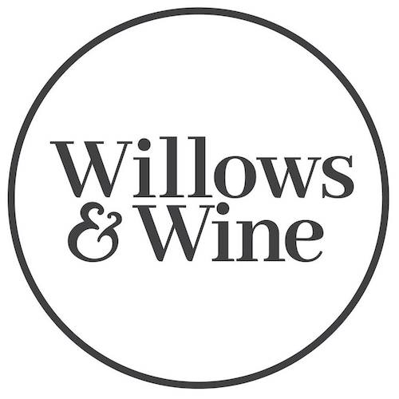
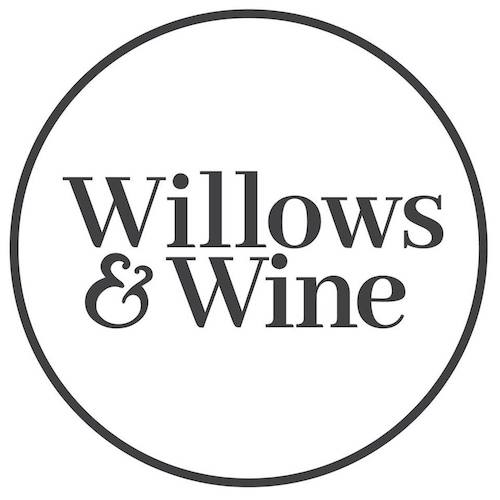

ARTICLE - INDEX
Pre-loved books & wine bar 315 Victoria St, West Melbourne Happy Hour 3pm-8pm Friday Monday - closed Tuesday - Thursday 3pm-11pm Friday - Saturday 3pm-1am Sunday 3pm-10pm

ARTICLE - INDEX
Pre-loved books & wine bar 315 Victoria St, West Melbourne Happy Hour 3pm-8pm Friday Monday - closed Tuesday - Thursday 3pm-11pm Friday - Saturday 3pm-1am Sunday 3pm-10pmARTICLE - MENU
Download MenuARTICLE - ABOUT
At Willows & Wine, we offer hand-picked local and international wine, cocktails and spirits with charcuterie boards and artisan cheese platters. What started as an idea became reality when we lovingly renovated the former Spanish bodega to open W&W in 2016. Enjoy the food & drink, read a pre-loved book or play a board game - we'd love to have you. Alice Wheeler, Owner
Press The Urban List Inside Melbourne's Gorgeous New Pre-Loved Bookshop & Wine Bar Broadsheet Willows & Wine Beat A second-hand bookshop and wine bar has opened in Melbourne Time Out Willows & Wine What's On Melbourne Willows & Wine